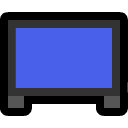

Lewdum - About
interests
 programming
programming
-
 rust
rust -
go
-
-
 linguistics
linguistics - anime
-
serial experiments lain
-
steins;gate
-
oregairu
-
- animation
-
steven universe
-
cyberpunk edgerunners
-
arcane
-
-
 video games
video games -
 philosophy
philosophy -
 music
music
activities
-
coding random shit in rust
-
 studying japanese
studying japanese -
 reverse engineering games
reverse engineering games -
 losing my marbles
losing my marbles -
 eating pizza
eating pizza